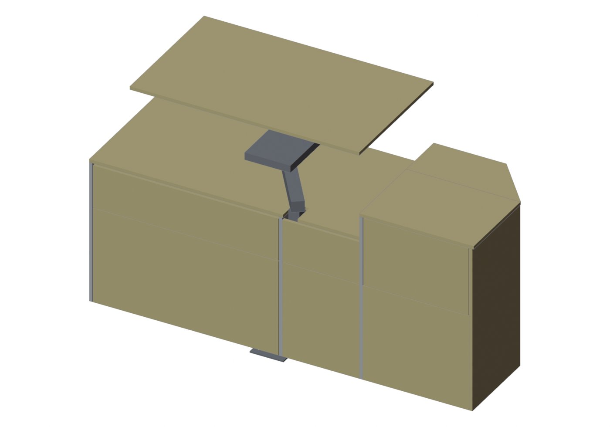
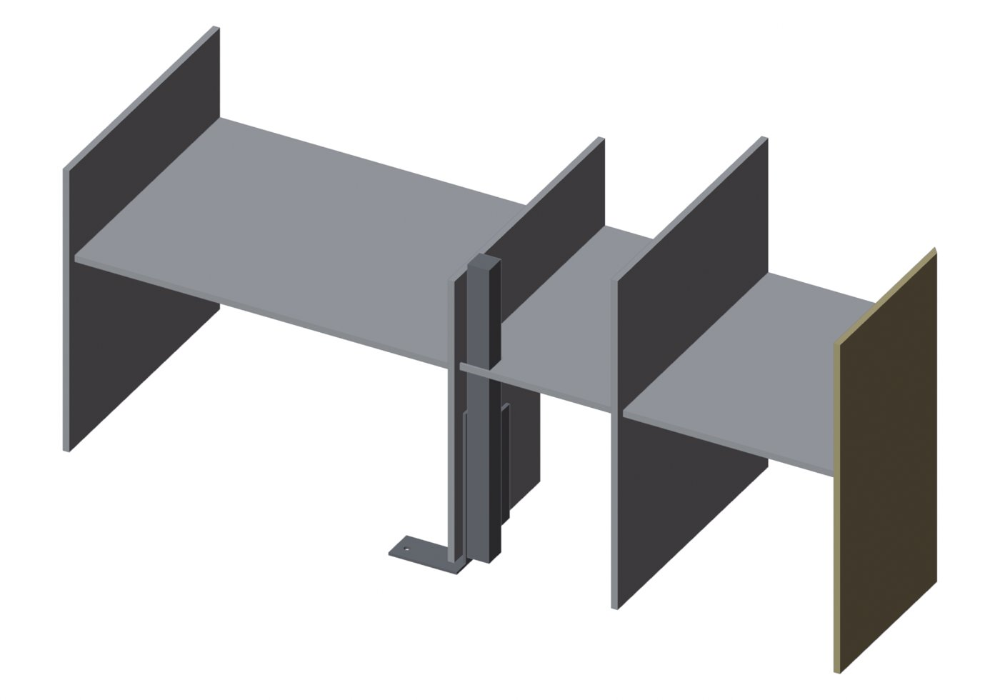
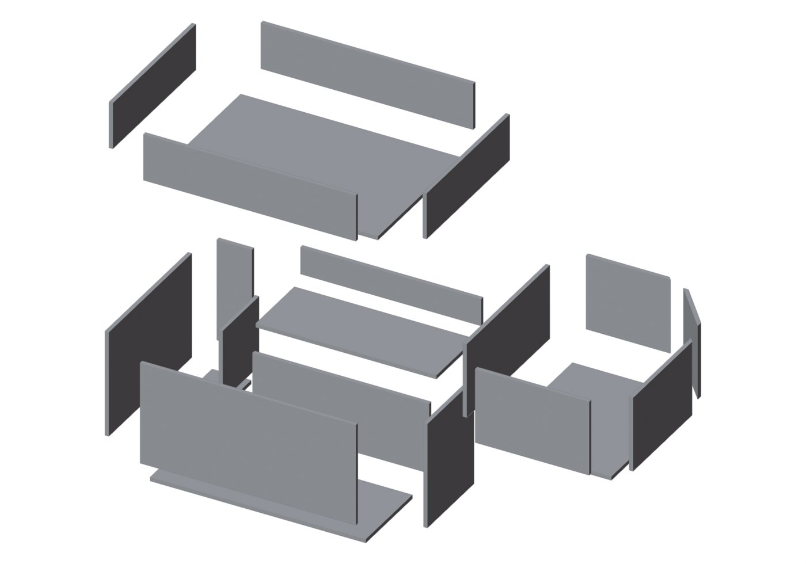

板取り図・組み立て図の部品か、部品表の行をタップすると「済」になる（もう一度タップで戻る）。記録は共有されるので、ほかのスマホ・PCで開いても同じ「済」が出る（15秒ごとに更新）。
| 材 | 使う所 | 部品 | 買う板（910×1820、12mm） |
|---|---|---|---|
| A材 | 天板・引き出しなどの前板（見える部分） | 11枚（2.09m²） | 2枚（2枚目は約1/3だけ使う） |
| B材 | 側板・棚板・間仕切り・引き出しの箱（見えない部分） | 27枚（3.68m²） | 2枚＋ソファベッドの余り3枚 |
通路から壁の方を見た図。左が車の前（シンク側）、右がリアドア側。左の長いブロックがスイベルテーブル、右の五角形のブロックがテーブル4。番号は下の部品表・板取り図の番号と同じ。

A1 A2 A3 A4 A5 A6 A7 A8 A9 A10 A11組み上がった状態。スイベルテーブルの天板（A2）は、下の棚天板（A1）が見えるように少し浮かせて描いた。

A5 B1 B2 B3 B4 B5 B6 支柱前板・天板・引き出しを外した状態。濃い灰色は支柱と床の金具（板ではない）。

B12 B7 B9 B8 B10 B11 B13 B14 B15 B17 B16 B18 B19 B20 B21 B22 B23 B24 B25 B26 B27箱ごとに板を離して描いた。左上＝B2上段の箱、左下＝B2下段の箱（タイヤハウスの段に合わせた形）、右＝テーブル4の箱。
| No | ブロック | 部品 | 寸法（mm） | 形 | Blender |
|---|---|---|---|---|---|
| A1 | スイベル | 棚天板（スイベルテーブルの下） | 1001×500 | 前縁に支柱の切欠き 54×77（左端から229〜283） | Shelf_B2_TopHigh |
| A2 | スイベル | スイベルテーブルの天板 | 850×500 | 長方形 | Desk_R_Table3 |
| A3 | テーブル4 | 跳ね上げ天板（開く部分） | 423×314 | 長方形 | Table4_Lid |
| A4 | テーブル4 | 固定天板（壁側） | 423×185 | 角落とし（リアドア側・壁側の角を 154×184 で斜めに） | Table4_HingeRail |
| A5 | テーブル4 | リア端の板（リアドアから見える） | 617×337 | 長方形（10-18の角落としで幅500→337） | Desk_R_EndRear |
| A6 | テーブル4 | 前板・下 | 394×358 | 長方形 | Front_Table4 |
| A7 | テーブル4 | 引き出し前板 | 390×255 | 長方形 | Front_Table4_上 |
| A8 | スイベル | 支柱前の目隠し・下 | 286×358 | 長方形 | Swivel_Cover |
| A9 | スイベル | 支柱前の目隠し・上 | 286×160 | 長方形 | Swivel_Cover_上 |
| A10 | スイベル | B2下 引き出し前板 | 687×358 | 長方形 | Drawer_B2_下_前板 |
| A11 | スイベル | B2上 引き出し前板 | 687×160 | 長方形 | Drawer_B2_上_前板 |
寸法は板の外形（長方形）。角落とし・切欠きは長方形に切ってから自分で加工する。リア端の板（A5）は側板だが、リアドアを開けると見えるのでA材にした。
| No | ブロック | 部品 | 寸法（mm） | 形 | Blender |
|---|---|---|---|---|---|
| B1 | 境目 | テーブル4右／スイベル左の側板 | 617×500 | 長方形 | Shelf_A_SideR |
| B2 | スイベル | B2左の側板（支柱の右） | 528×500 | タイヤハウスの切欠き 215×215（壁側・床側の角） | Shelf_B2_SideL |
| B3 | スイベル | 間仕切り（シンクとの境目） | 528×500 | 長方形 | Shelf_B2_SideR |
| B4 | テーブル4 | 棚板 | 482×394 | 角落とし（壁側・リアドア側の角を 137×164 で斜めに） | Shelf_T4_Shelf |
| B5 | スイベル | B2の棚板 | 691×482 | 長方形 | Shelf_B2_Shelf |
| B6 | スイベル | 支柱まわりの棚板 | 482×286 | 支柱の切欠き 53×46（前縁から4、右端まで） | Shelf_Swivel_Shelf |
| B7 | テーブル4 | 引き出し箱 底 | 456×368 | 角落とし 110×132 | Drawer_T4_箱 |
| B8 | テーブル4 | 引き出し箱 右側 | 456×228 | 長方形 | Drawer_T4_箱 |
| B9 | テーブル4 | 引き出し箱 左側（リアドア側） | 339×228 | 長方形（奥端を斜めに） | Drawer_T4_箱 |
| B10 | テーブル4 | 引き出し箱 前 | 344×228 | 長方形 | Drawer_T4_箱 |
| B11 | テーブル4 | 引き出し箱 奥 | 256×228 | 長方形（左端を斜めに） | Drawer_T4_箱 |
| B12 | テーブル4 | 引き出し箱 斜めの板 | 196×228 | 長方形（両端を約50°に） | Drawer_T4_箱 |
| B13 | スイベル | B2上 箱 底 | 665×456 | 長方形 | Drawer_B2_上_箱 |
| B14 | スイベル | B2上 箱 側（左） | 456×142 | 長方形 | Drawer_B2_上_箱 |
| B15 | スイベル | B2上 箱 側（右） | 456×142 | 長方形 | Drawer_B2_上_箱 |
| B16 | スイベル | B2上 箱 前 | 641×142 | 長方形 | Drawer_B2_上_箱 |
| B17 | スイベル | B2上 箱 奥 | 641×142 | 長方形 | Drawer_B2_上_箱 |
| B18 | スイベル | B2下 箱 側（左） | 456×323 | L形（奥下 200×228 を欠く＝タイヤハウスの段） | Drawer_B2_下_箱 |
| B19 | スイベル | B2下 箱 側（右） | 456×323 | 長方形 | Drawer_B2_下_箱 |
| B20 | スイベル | B2下 箱 底（手前） | 651×256 | 長方形 | Drawer_B2_下_箱 |
| B21 | スイベル | B2下 箱 底（奥・右端） | 200×118 | 長方形 | Drawer_B2_下_箱 |
| B22 | スイベル | B2下 箱 前 | 651×311 | 長方形 | Drawer_B2_下_箱 |
| B23 | スイベル | B2下 箱 段の立ち上がり | 533×216 | 長方形 | Drawer_B2_下_箱 |
| B24 | スイベル | B2下 箱 段の側 | 200×216 | 長方形 | Drawer_B2_下_箱 |
| B25 | スイベル | B2下 箱 段の上の板 | 545×212 | 長方形 | Drawer_B2_下_箱 |
| B26 | スイベル | B2下 箱 奥（段の上） | 545×83 | 長方形 | Drawer_B2_下_箱 |
| B27 | スイベル | B2下 箱 奥（右端） | 311×106 | 長方形 | Drawer_B2_下_箱 |
テーブル4の引き出し箱（B7〜B12）は、壁の角（リアドアから155・壁から185の斜め線）から10mm離して角を落とし、斜めの板B12で閉じた形。B2下の箱（B18〜B27）はタイヤハウスの段に合わせた形で、Blenderのモデルどおり。
店で切る：2回（赤い点線、番号の順に）
① 板を1820の長い辺と平行に、端から500mmで切る
② 1820×500の板をA1の右で910の短い辺と平行に切る（端から1001mm）
家で切る：1001×500：A1 ／ 816×500：A5・A11・A9 ／ 1820×407：A10・A6・A3・A8
店で切る：2回（赤い点線、番号の順に）
① 板を910の短い辺と平行に、端から850mmで切る
② 910×850の板をA2の下で1820の長い辺と平行に切る（端から500mm）
家で切る：850×500：A2 ／ 967×910：余り（次のブロックに回す） ／ 850×407：A4・A7
A4の角落とし（青い線）：423×185に切った後、壁側の長い辺をリアドア側の角から154、リアドア側の短い辺を同じ角から184（反対の角から1）の2点を結んで切る。図は見える面（上面）を上にして、右が車の前、下が壁側の向き。
家で切る（店では切らない）。5枚：B22・B13・B19・B16・B14
家で切る（店では切らない）。2枚：B25・B21
家で切る（店では切らない）。1枚：B12
店で切る：4回（赤い点線、番号の順に）
① 板を910の短い辺と平行に、端から500mmで切る
② 1317×910の板を910の短い辺と平行に、端から500mmで切る
③ 910×814の板を910の短い辺と平行に、端から528mmで切る
④ 910×283の板をB20の右で910の短い辺と平行に切る（端から256mm）
家で切る：910×500：B1・B6 ／ 910×500：B2・B7 ／ 910×528：B3・B4 ／ 910×256：B20・B11 ／ 910×24：端材
B2のタイヤハウス切欠き（青い線）：528×500に切った後、壁側（500の辺の端）・床側（528の辺の下）の角を215×215で切り取る。左の辺が壁側、下の辺が床側。
店で切る：3回（赤い点線、番号の順に）
① 板を910の短い辺と平行に、端から691mmで切る
② 910×691の板をB5の下で1820の長い辺と平行に切る（端から482mm）
③ 1126×910の板を910の短い辺と平行に、端から456mmで切る
家で切る：691×482：B5 ／ 910×456：B18・B10・B24・B27 ／ 910×667：B17・B26・B23 ／ 691×425：B9・B8・B15